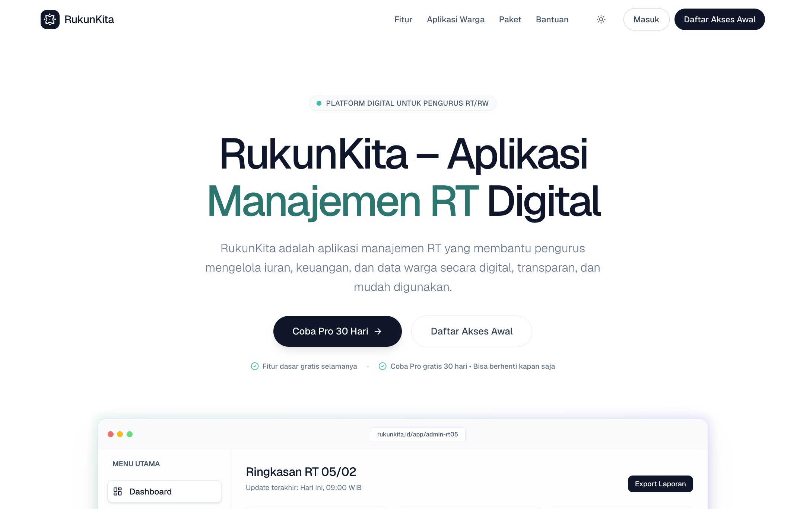
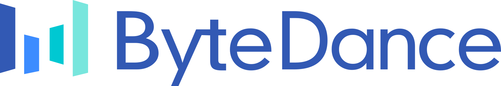

Request / Response
I build the systems your clicks never see.
Backend-focused software engineer experienced in high-throughput distributed systems—from 10M+ daily API calls to multi-region services with 99.9% availability.
Across ByteDance, Tokopedia, and UPT TIK UNJ · CV updated November 2025
Engineer node
Febrianto W.
02 / Production impact
Measured in outcomes,
not vanity metrics.
Selected results from high-throughput commerce systems and distributed services.
03 / Live SaaS product
RukunKita · Community operations
Digital infrastructure for better-run neighborhoods.
RukunKita helps Indonesian RT/RW administrators manage dues, finances, resident data, assets, and announcements in one transparent, easy-to-use platform.
Visit RukunKita
Manual cash books, hard-to-access financial reports, and neighborhood information scattered across chat groups.
One platform for dues, cash, resident records, assets, agendas, and centralized announcements.
Residents can check dues, financial reports, and neighborhood updates directly from their app.
Resident administration
RT finances
Dues management
Assets & operations
Announcements
04 / Technical publication
Technical publication · Tokopedia
Reducing service dependency calls by 40%.
“Data Propagation and Synchronization Framework To Reduce Service Dependency Call” documents an approach to improving data flow while reducing direct dependency between services.
Read the publication
IP.com prior-art database
Before
Service A→Service B→Service C
More direct dependency calls
Outcome
−40%
inter-service dependency
High-level outcome only; implementation details remain in the publication.
05 / Career request path
From academic platforms
to commerce at scale.
A record of roles and outcomes, ordered from the most recent experience.

Research and Development Engineer
High-throughput backend systems · Go · distributed services
Optimized Go services supporting 10M+ daily API calls, raising processing efficiency by 35% and reducing API latency by 25% across multi-region commerce operations.
10M+ calls/day+35% efficiency−25% latency99.9% availability
View engineering notes
- Standardized system design practices across 5+ cross-functional teams, reducing post-launch bugs by 15%.
- Improved data reliability and consistency by 40% across distributed microservices.
- Reduced operational overhead by 20% through cross-regional integration and scalable deployments.
- Improved observability with product and infrastructure teams while sustaining 99.9% availability.
Software Engineer
Fulfillment Platform · distributed events · delivery systems
Built and maintained core fulfillment services serving millions of daily requests, while reducing shipping computation latency by 30% and improving delivery orchestration by 25%.
Millions of requests−30% compute latencyNSQ events99.9% uptime
View engineering notes
- Worked on user-address, shop-location, region-maps, rates/ongkirapp, and shipper-service.
- Used NSQ-based messaging to handle millions of distributed events for task queues and inter-service communication.
- Produced system design and impact-analysis documents before implementation.
- Supported migration from GCP to ByteCloud while maintaining 99.9% uptime.
- Published a data propagation and synchronization framework that reduced service dependency by 40%.
UPT TIK UNJ
Web Developer
Admissions · academic workflows · examination systems
Digitized admissions and academic workflows, reducing manual work by 80%, improving data accuracy by 90%, and supporting thousands of concurrent exam participants.
−80% manual work90% data accuracyThousands concurrent
View engineering notes
- Built university systems with Laravel, Express.js, and React.js.
- Worked across Penmaba, SIAKAD, PPG, SNMPTN, and RPL workflows.
- Built a Labschool entrance-exam application with real-time student progress tracking.
06 / Systems archive
Selected university systems.
Ten interfaces from admission, assessment, and academic operations. Select a system for a larger preview.
07 / Start a conversation
Let’s build dependable systems.
Want to discuss backend systems or a collaboration? Send an email.
widyoutomof@gmail.com